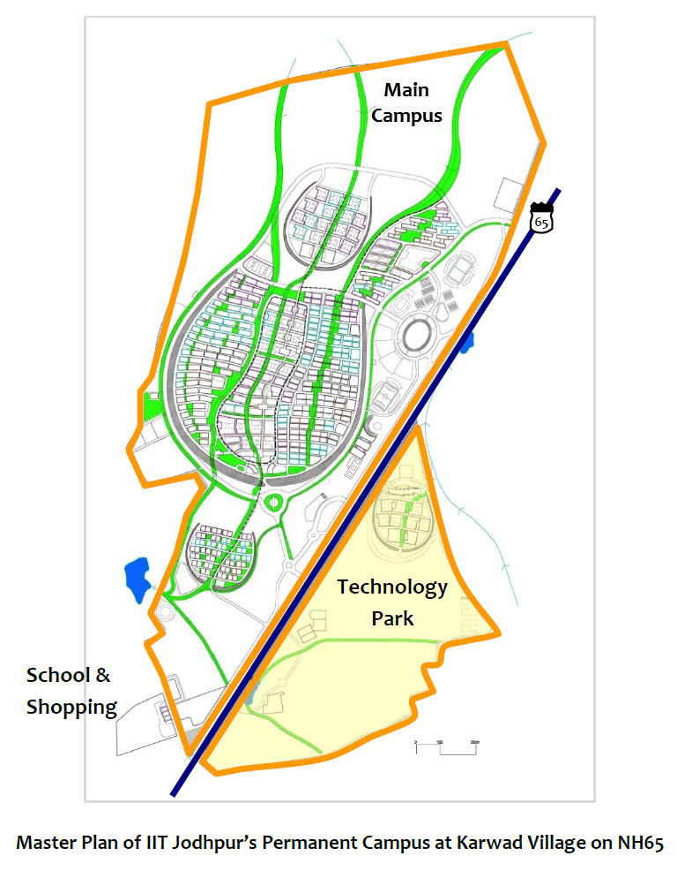

Campus of IIT Jodhpur
IIT Jodhpur has shifted to its sprawling state-of-the-art residential permanent campus on 852 acres of land located ~24 km away from the center of the city of Jodhpur on National Highway 62 towards Nagaur, N-NE from the center of Jodhpur. The permanent campus has 3 parcels of land. The Institute is finalising plans for adopting one of for harvesting technologies. This new campus has been planned meticulously and envisioned to stand as a symbol of academics – simple, but deep...

The foundation stone for the permanent campus was laid on 16 April 2013 by the Hon. Union Minister for Human Resources Development (Government of India), Dr. M. M. Pallam Raju. The Permanent Campus of the Institute is being constructed. Work to build Phase 1 of the campus began in March 2015. When complete, it will be the first fully-planned technical institute campus in India. More importantly, it will be an international exemplar of sustainability with strategies for ensuring NET ZERO ENERGY, WATER and WASTE. The other salient features of the Permanent Campus are:
(1) Walking campus, which is pedestrian oriented and bicycle dominant;
(2) Learning facilitated anywhere, anytime with wireless ICT backbone (including Multi-media enabled learning spaces with flexible, shared public spaces);
(3) Thermally comfortable smart buildings with GRIHA 4/5 star compliant buildings and GRIHA LD benchmark campus (including dense desert settlement morphology, low height buildings (up to a maximum of 3 storeys) built with low embodied energy materials, and improved local and traditional methods);
(4) Plantation with native species, soil stabilization, protection from dusty wind to arrest erosion, desertification, and building-up soil moisture over time;
(5) Rain water harvesting, and water reduction and sewage recycling, together greening the site over time; and
(6) Segregated wastes and customized recycling
Presently, the campus has housing for Faculty Members and Officers. Construction of houses for Staff Members is underway. Also, development of buildings for Kendriya Vidyalaya IIT Jodhpur (up to Class XII), Bank, Post Office and Market are planned. And, it will have a Primary Health Center with hotline connections to reach the top hospitals of the city, like the All India Institute of Medical Sciences, Jodhpur, and a fully equipped ambulance service. A large parcel of the Permanent Campus (of about 182 acres) is set aside for the development a TECHNOLOGY PARK to strengthen institute-industry interactions.
3-storey Residence on Permanent Campus
The first migrations into the campus took place during May-July 2017.